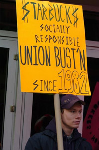

Submitted on Tue, 08/08/2006 - 2:59am
Starbucks is adamantly anti-union. Daniel Gross found that out the hard way. This weekend, Gross was fired, fellow employees say, after trying for three years to organize his fellow workers at 17th and Broadway, in Manhattan. Gross is the fourth union activist to be fired from the company this year. The workers will continue trying to organize with the IWW (yes, the Wobblies live!) and have some suggestions on how you can help support their campaign, including boycotting Starbucks until it changes its union-busting ways.
Read the entire article.
Submitted on Tue, 08/08/2006 - 2:51am
Daniel Gross, 27, has spent the last three years trying to organize his fellow Starbucks baristas into the Industrial Workers of the World ( I wrote about him last spring in New York Magazine.) He has reached some success at at least three Starbucks in Manhattan, and others elsewhere, despite vociferous opposition from management.
The overwhelmingly young members of his union are stuck, like millions of teens and 20somethings nationwide, in low-wage, mostly dead-end food service jobs with unpredictable hours and rigid codes of behavior. Some are trying to work their way through college, others have families to support; all of them have this strange idea that they deserve better conditions and prospects. They have embraced the radical socialism of the One Big Union ( the one that brought you Joe Hill and "Pie in the Sky") , now just a shadow of its former self, because of its decentralized, democratic structure and its uncompromising ethos of solidarity. “The IWW is basically a fan club for anarchists and labor geeks,” one barista told me. “But we’re making it into something real.”
Submitted on Tue, 08/08/2006 - 2:45am
By ELIZABETH M. GILLESPIE - AP BUSINESS WRITER
SEATTLE -- Starbucks Corp. has fired the co-founder of a union claiming to represent employees at six of its Manhattan coffee houses.
Daniel Gross, a barista and organizer for IWW Starbucks Workers Union, a branch of the Industrial Workers of the World, said Monday that he is challenging his termination, which followed a company investigation into an allegation that he made a threatening remark to a district manager at a recent union rally.
Gross, who has led union organizing efforts at Starbucks for the past three years, countered that he was simply making a statement of solidarity when he told District Manager Allison Marx that a fellow employee should not be fired.
Submitted on Thu, 08/03/2006 - 2:38am
Whereas Industrial Workers of the World member and Starbucks barista Daniel Gross took part in a protest to defend the job of a fellow worker in the spirit of mutual aid and solidarity; and
Whereas Starbucks is currently engaging in a sham investigation of Fellow Worker Gross because of his participation in said protest and engagement in concerted activity; and
Whereas Starbucks will decide whether or not to fire FW Gross at the conclusion of the "investigation"; and
Whereas the IWW Starbucks Workers Union has made important improvements in wages and working conditions at the world's largest coffee chain through direct action on and at the job and involving workers throughout the community in the process; and
Whereas Starbucks continues to wage a relentless anti-union campaign to break the IWW presence at the company; and
Whereas despite the disgraceful union-busting from Starbucks including the retaliatory terminations of IWW members Joe Agins Jr., Charles Fostrom, and Evan Winterscheidt, the Wobbly campaign continues to grow; and
Whereas the IWW refuses to be silenced or intimidated by Starbucks, and has always stood by its motto: "An Injury to One is An Injury to All";
Now, therefore, be it RESOLVED,
That the General Executive Board of the Industrial Workers of the World will, in the event that Starbucks terminates FW Gross, encourage international labor organizations and supporters to publicly condemn Starbucks' behavior and be prepared to take further action until such time that he is reinstated.
Submitted on Wed, 08/02/2006 - 3:45pm
 On Saturday July 29th Starbucks workers, members of the NYC and NJ IWW branches as well as several coalition members from Make The Road By Walking, CODA and NMASS walked the picket in support fired workers Joe Agins Jr., Charles Fostrom, and Evan Winterscheidt. Starbucks unlawfully fired members of the union as a form of intimidation to frighten workers from organizing. Our union is outraged by the latest effort by the company to silence us. Regardless of workers being fired and continual threats of firings, we refuse to be intimidated and continue to stand up for better conditions on and off the job.
On Saturday July 29th Starbucks workers, members of the NYC and NJ IWW branches as well as several coalition members from Make The Road By Walking, CODA and NMASS walked the picket in support fired workers Joe Agins Jr., Charles Fostrom, and Evan Winterscheidt. Starbucks unlawfully fired members of the union as a form of intimidation to frighten workers from organizing. Our union is outraged by the latest effort by the company to silence us. Regardless of workers being fired and continual threats of firings, we refuse to be intimidated and continue to stand up for better conditions on and off the job.
On the same Saturday of our picket, an organizing committee at 17th and Broadway Union Square West went public and several members started wearing union pins. Workers at 17th and Broadway have experienced some of the toughest intimidation and harassment as a result of being across the park from Union Square East where union members have been public for 1/2 a year. Union members at 17th and Broadway along with thier brothers and sisters at 14th and 4th ave demand consistent schedules, higher wages for all Union Square Starbucks workers, fair raises and an immediate investigation into Mr. Gomez's behavior and an end to management's disrespect, harassment and prejudice against all 17th and Broadway Starbucks union members.